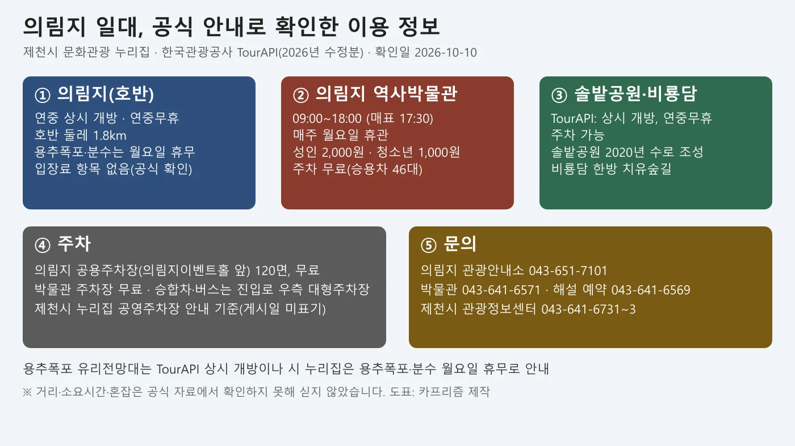
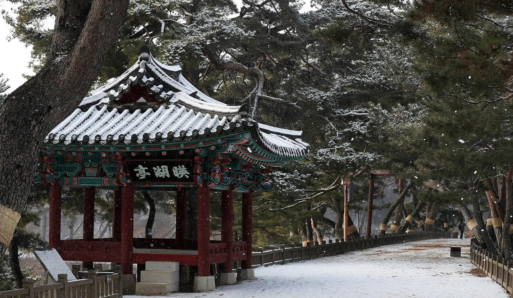
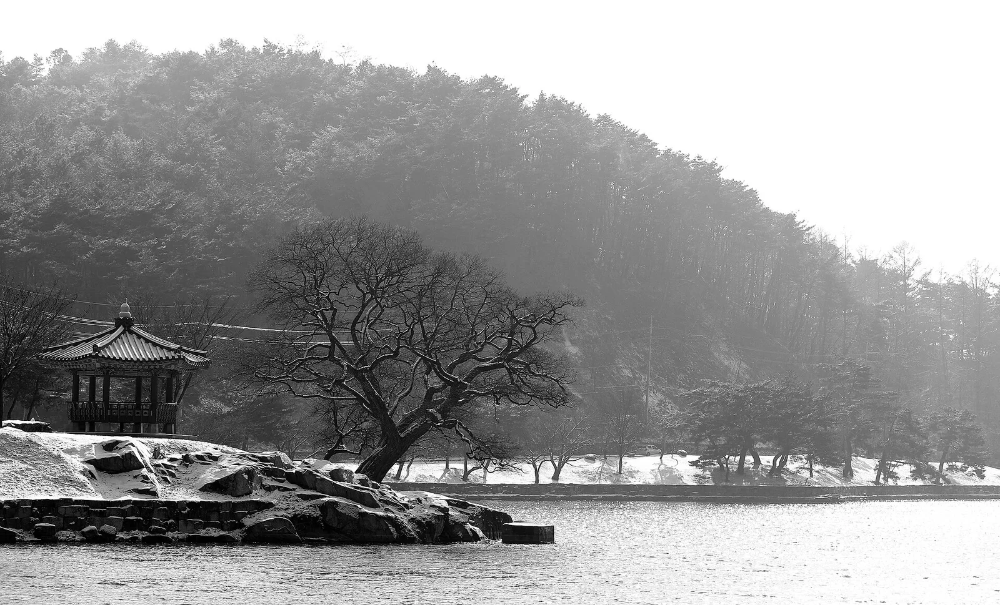
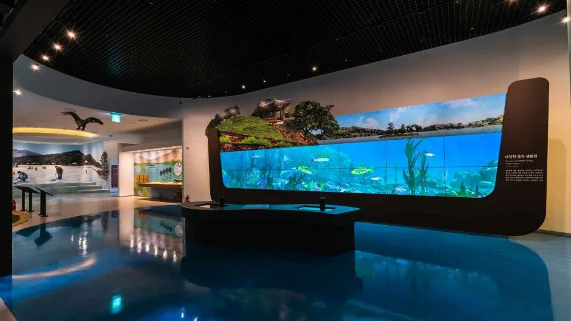
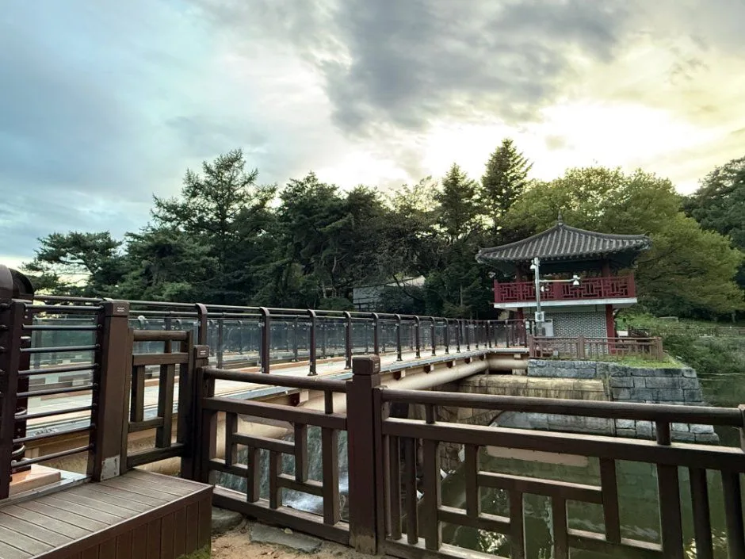
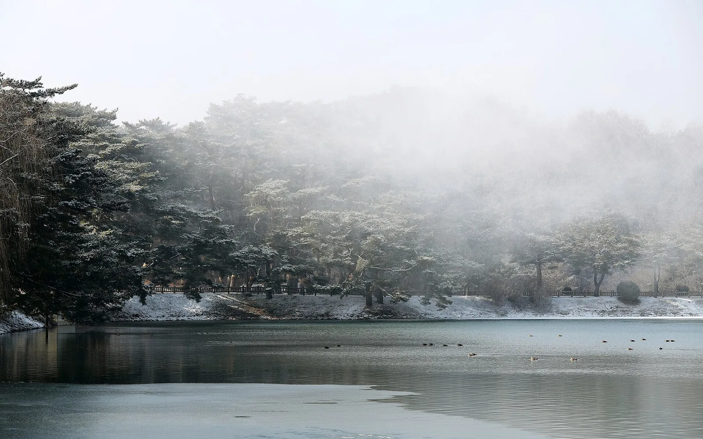
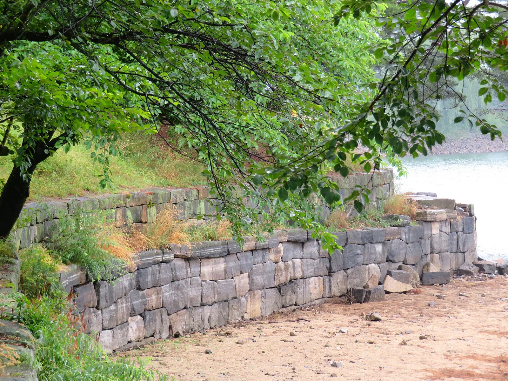
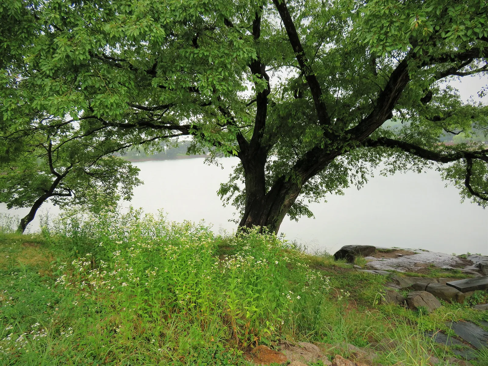

▲ 눈이 덮인 의림지(겨울 사진, 가을 현재 모습이 아니다). 2017년 1월 12일 촬영(코리아넷 기재). 사진=Jeon Han(코리아넷, 위키미디어 커먼즈, CC BY-SA 2.0)
"의림지는 입장료가 있을까, 주차는 어디에 할까?" 제천시 문화관광 누리집은 의림지(제천시 의림지로 33)를 연중 상시 개방, 연중무휴로 안내하고, 제천시 공영주차장 안내에는 의림지 공용주차장(의림지이벤트홀 앞) 120면이 무료로 올라 있다. 호수 옆 의림지 역사박물관은 성인 2,000원이다. 이 글은 제천시 문화관광 누리집, 의림지 역사박물관 누리집, 한국관광공사 TourAPI, 제천시 공지사항을 2026년 10월 10일에 직접 열어 확인한 값만 옮겼다. 확인하지 못한 항목은 그대로 적었다.
💡 먼저 결론
호수 산책에는 입장료 항목이 공식 안내에 없고, 유료로 확인되는 곳은 역사박물관(성인 2,000원)과 파크랜드 놀이기구 이용료다. 다만 호수 둘레 소요 시간, 단풍 절정 날짜, 용추폭포 유리전망대의 정확한 휴무일은 공식 자료로 확인하지 못했다. 제천시 공지사항에서 '의림지'로 검색한 가장 최근 글은 2025년 4월 24일의 미디어 파사드 상영 중지 안내다. 다만 '비룡담'으로 검색하면 2026년 7월 9일자 비룡담 데크길 보수공사 통행제한 공지(통제 7월 21~23일, 공사 일정에 따라 변동 가능)가 따로 나오므로, 의림지 일대 통제 공지는 '의림지' 한 단어로는 다 걸리지 않는다. 의림지 호반 자체의 2026년 통제·휴장 공지는 찾지 못했다. 제천시 의림지 안내 바로가기
1. 한눈에 보기 — 확인한 것과 확인하지 못한 것
의림지는 제천시 모산동에 있는 삼한시대 저수지로, 제천시는 제천10경 중 제1경으로 소개한다. 호수 주변에는 박물관, 솔밭공원, 비룡담저수지, 용추폭포가 모여 있다. 아래 표는 항목별 값과 출처를 나눈 것이다.
| 항목 | 확인된 값 | 출처·상태 |
|---|---|---|
| 의림지 개방 | 연중 상시 개방, 연중무휴 | 제천시 문화관광 누리집, TourAPI(수정일 2026-04-20) |
| 용추폭포·분수 | 매주 월요일 휴무 | 제천시 문화관광 누리집 |
| 의림지 입장료 | - | 요금 항목 없음(제천시·TourAPI 모두 입장료 안내 없음) |
| 의림지 주차 | 공용주차장 120면, 무료(의림지이벤트홀 앞) | 제천시 공영주차장 안내(게시일 미표기) |
| 역사박물관 | 09:00~18:00, 월요일 휴관, 성인 2,000원 | 의림지 역사박물관 누리집 '관람안내' |
| 의림지 파크 랜드 | 10:00~18:00, 연중무휴, 입장료 없음·놀이기구 이용료 별도 | TourAPI(수정일 2026-04-15) |
| 호수 둘레 소요 시간 | - | 공식 자료에서 확인하지 못했다 |
| 단풍 절정일 | - | 산림청 예측 목록에서 확인되지 않아 날짜를 쓰지 않는다 |
| 문의 | 의림지 관광안내소 043-651-7101 | 제천시 문화관광 누리집 |

▲ 공식 안내로 확인한 의림지 일대 이용 정보 도표(확인일 2026-10-10). 사진=카프리즘 제작
2. 의림지는 어떤 곳 — 삼한시대 저수지, 2006년 국가명승
제천시 누리집에 따르면 의림지는 삼한시대에 축조된 김제 벽골제, 밀양 수산제와 함께 우리나라 최고(最古) 수준의 저수지로 본래 '임지'라 했다. 고려 성종 11년(992) 군현 명칭을 고칠 때 제천을 '의원현' 또는 '의천'이라 했고, 그 첫 글자 '의'를 붙여 의림지라 부르게 됐다고 한다. 축조된 명확한 연대는 알 수 없고, 구전으로는 신라 진흥왕 때 악성 우륵이 용두산(871m) 개울물을 막아 둑을 쌓은 것이 시초라고 한다. 이후 현감 박의림이 돌을 3층으로 쌓아 보강했다는 이야기도 전한다. 2006년에 국가명승으로 지정됐다고 제천시는 적었다.
| 항목 | 내용 |
|---|---|
| 호반 둘레 | 1.8km |
| 만수면적 | 151,470㎡ |
| 수심 | 8~13m |
| 관개 | 대수원지로 289.4정보의 농지를 관개한다고 소개(TourAPI '제천 의림지와 제림') |
| 축조 시기 | 삼한시대(제천시: 명확한 연대는 알 수 없음) |
▲ 눈이 덮인 의림지(겨울 사진, 가을 현재 모습이 아니다). 2017년 1월 12일 촬영(코리아넷 기재). 호수 표면의 얼음이 깨져 물이 드러난 자리가 보인다. 사진=Jeon Han(코리아넷, 위키미디어 커먼즈, CC BY-SA 2.0)
3. 호반 걷기 — 영호정·경호루·용추폭포·우륵대
제천시 누리집은 호수 주변의 볼거리로 순조 7년(1807)에 세운 영호정, 1948년에 지은 경호루, 수백 년 자란 소나무와 수양버들, 30m의 자연폭포 용추폭포를 든다. 호수 주변에는 목책 길과 분수, 인공폭포가 있어 관망하며 걷기 좋다고 소개한다. 우륵이 가야금을 탔다는 바위 우륵대(일명 제비바위·연암·용바위)와 우물 우륵정이 남아 있다고도 적었다. 겨울·해빙기에 잡히는 공어(빙어)와 임금 수라상에 올랐다는 순채도 소개 문구에 있다.
✅ 미디어 파사드는 확인되지 않는다
제천시 공지사항에는 2025년 4월 24일자로 "의림지 인공폭포 미디어 파사드 영상기기 고장으로 당분간 상영을 중지한다"는 글이 있다. 이후 재개 공지는 '의림지' 검색에서 찾지 못했다. 다만 제천시 문화관광 누리집의 미디어파사드 소개 페이지에는 운영시간(춘추기 2~4월·9~10월 19:30·20:00·20:30, 하절기 5~8월 20:00·20:30·21:00, 동절기 11~1월 19:00·19:30·20:00 각 3회)이 그대로 올라 있고 중지 표시는 없다. 소개 페이지의 시간표와 2025년 중지 공지 중 어느 쪽이 현재 상태인지 공식 자료로 가릴 수 없으므로, 야간 영상은 일정에 넣지 않거나 관광안내소(043-651-7101)에 먼저 묻는 편이 안전하다. 문의는 제천시 관광과 043-641-6563이다.

▲ 눈이 쌓인 호반의 정자와 소나무(겨울 사진). 2017년 1월 12일 촬영(코리아넷 기재). 현판 글자는 영호정(映湖亭)으로 읽히나 사진 설명에 정자 이름은 적혀 있지 않다. 사진=Jeon Han(코리아넷, 위키미디어 커먼즈, CC BY-SA 2.0)

▲ 호수 위 바위 섬과 정자(겨울 사진). 2017년 1월 12일 촬영(코리아넷 기재). 사진=Jeon Han(코리아넷, 위키미디어 커먼즈, CC BY-SA 2.0)
4. 의림지 역사박물관 — 09:00~18:00, 성인 2,000원
제천시는 의림지의 역사와 구조, 관개 방법, 생태를 소개하는 박물관을 2019년 1월 개장했다고 밝혔다. 상설전시실, 기획전시실, 실감콘텐츠 체험관, 어린이체험실, 야외전시로 구성된다고 TourAPI는 소개한다.
| 항목 | 내용 |
|---|---|
| 관람 시간 | 09:00~18:00 (매표 마감 17:30) |
| 휴관일 | 매주 월요일(공휴일과 겹치면 그다음 첫 비공휴일), 1월 1일, 설날, 추석, 그 밖에 시장이 정하는 날 |
| 요금 | 성인 2,000원 / 아동·청소년·군인 1,000원 / 취학 전 아동·만 65세 이상·장애인 등 무료 |
| 주차 | 무료, 승용차 46대(장애인 2대). 승합차·버스는 진입로 우측 대형주차장 |
| 해설 | 상설전시실 해설 10:00~17:00. 정기 해설 화~금 10:00·15:00, 현장 접수 화~일(12:00~13:00 제외), 별도 예약 화~금. 예약 043-641-6569 |
| 문의 | 043-641-6571 |
▲ 의림지 역사박물관 외관. 한국관광공사에 등록된 사진이며 촬영 시기는 확인하지 못했다. 사진=한국관광공사

▲ 박물관 전시실의 대형 영상 연출. 한국관광공사에 등록된 사진이며 촬영 시기는 확인하지 못했다. 사진=한국관광공사
5. 호수 곁 — 솔밭공원·비룡담저수지·용추폭포 유리전망대·파크 랜드
| 시설 | TourAPI 안내 | 확인한 값 |
|---|---|---|
| 의림지 솔밭공원 | 제2의림지인 비룡담저수지 둑 아래 소나무 숲 공원. 2020년 숲 속에 자연형 인공수로를 만들어 여름 물놀이를 할 수 있게 했다고 소개 | 상시 개방, 연중무휴, 주차 가능(수정일 2026-09-11) |
| 비룡담 저수지 | 저수지 둘레 수변데크길. 길을 '제천 의림지 한방 치유숲길'이라 부르며 솔향기길과 물안개길로 구성 | 상시 개방, 연중무휴, 주차 가능(수정일 2026-04-21). 제천시 공지: 2026-07-21~23 데크길 일부 구간 보수공사로 통제(종료 시점 이후 연장 공지는 찾지 못함) |
| 용추폭포 유리전망대 | 폭포 위 인도교. 센서를 지나면 불투명 유리가 투명해진다고 소개 | TourAPI는 상시 개방. 제천시는 용추폭포·분수 월요일 휴무로 안내해 두 안내가 다르다(수정일 2026-10-08) |
| 의림지 파크 랜드 | 회전목마·범퍼카·미니바이킹 등 놀이시설과 양궁·사격 게임 | 10:00~18:00, 연중무휴. 입장료 없음, 놀이기구 이용료 별도(요금 확인 못함) |

▲ 용추폭포 유리전망대 주변 이미지. 한국관광공사에 등록된 사진이며 촬영 시기는 확인하지 못했다. 사진=한국관광공사
용추폭포 유리전망대처럼 안내가 갈리는 시설은 월요일 방문을 피하거나 의림지 관광안내소(043-651-7101)에 먼저 묻는 편이 낫다. 같은 박물관 일대의 코스는 제천시가 '삼한의 초록길~모산비행장~의림지 산책', '의림지·용추폭포' 같은 1박 2일 시내권 일정으로 소개해 두었다.

▲ 안개가 낀 호수와 소나무(겨울 사진). 2017년 1월 12일 촬영(코리아넷 기재). 사진=Jeon Han(코리아넷, 위키미디어 커먼즈, CC BY-SA 2.0)
6. 요금·주차 정리
| 시설 | 요금 | 주차 | 근거 |
|---|---|---|---|
| 의림지 호반 | 입장료 항목 없음 | 공용주차장 120면, 무료(의림지이벤트홀 앞) | 제천시 문화관광·공영주차장 안내 |
| 역사박물관 | 성인 2,000원·청소년 1,000원 | 무료, 승용차 46대 | 박물관 누리집 |
| 솔밭공원·비룡담 | 요금 항목 없음 | 주차 가능(면수 확인 못함) | TourAPI |
| 파크 랜드 | 입장료 없음, 이용료 별도 | 주차 가능(면수 확인 못함) | TourAPI |
| 용추폭포 유리전망대 | 요금 확인 못함 | 주차 가능 | TourAPI |
✅ 주차는 이렇게 확인하자
공영주차장 안내의 '노외 무료 주차장' 표에 의림지 공용주차장(의림지이벤트홀 앞) 120면이 올라 있다. 게시일이 없고 단풍철 만차 여부는 공식 자료에 없으므로, 현장에서는 안내소와 박물관 쪽 대형주차장 안내를 따르자. 제천시 공영주차장 바로가기

▲ 돌로 쌓은 호반 둑 부근(여름 사진). 2016년 6월 23일 촬영(촬영자 기재). 사진=Kyle Magnuson(위키미디어 커먼즈, CC BY 2.0)
7. 가을 방문 — 단풍 날짜와 확인할 공지
의림지의 단풍 절정일은 날짜를 쓰지 않는다. 카프리즘이 정리한 산림청 2026년 단풍 절정 예측 목록(산림청 공식 지도 기사, 주말 단풍표)에는 제천 지점이 없다. 이 글의 호수 사진은 2017년 1월(겨울)과 2016년 6월(여름)에 찍은 것이라 가을 모습이 아니다. 산불조심기간 입산통제는 호수 산책과 별개로 주변 산행에 영향을 줄 수 있어 입산통제 날짜 정리 기사를 함께 보자. 단풍철 도로변 주정차는 갓길 주정차 기사에 정리했다.
| 항목 | 내용 | 상태 |
|---|---|---|
| 월요일 | 용추폭포·분수 휴무, 역사박물관 휴관 | 제천시·박물관 누리집 |
| 박물관 매표 | 17:30 마감 | 박물관 누리집 |
| 미디어 파사드 | 2025-04-24 상영 중지 공지, 재개 공지 확인 못함. 소개 페이지에는 시간표만 게시(게시일 없음) | 제천시 공지사항·문화관광 누리집 |
| 2026 통제·휴장 | 의림지 호반: '의림지' 검색에서 2026년 공지 없음. 비룡담 데크길: 2026-07-09 공지, 7월 21~23일 일부 구간 보행 전면 제한(공사 일정에 따라 변동 가능), 이후 연장 공지 못 찾음(2026-10-10 확인) | 제천시 공지사항('비룡담' 검색, 도시정원과 043-641-6536) |

▲ 호숫가의 큰 나무(여름 사진). 2016년 6월 23일 촬영(촬영자 기재). 사진=Kyle Magnuson(위키미디어 커먼즈, CC BY 2.0)
8. 제천 인근 — 공식 소개와 카프리즘 기사
제천시 누리집이 꼽은 제천10경은 의림지, 박달재, 월악산, 청풍문화유산단지, 금수산, 용하구곡, 송계계곡, 옥순봉, 탁사정, 배론성지다. 같은 날 코스를 짜기 전에 각 곳의 공지와 이동 시간은 따로 확인해야 한다. 이 글은 호수 산책과 박물관에 초점을 두었고, 다른 각도는 아래 기사에서 다뤘다.
- 청풍호 케이블카: 운행 구간·요금·청풍문화재단지는 청풍호반케이블카 기사.
- 월악산 영봉: 산행·계곡 단풍은 월악산 영봉 기사.
- 괴산 산막이옛길: 같은 충북의 호수 산책 코스는 산막이옛길 기사.
- 단양: 도담삼봉 기사.
9. 가는 길 — 제천시 누리집 안내
| 구분 | 안내 |
|---|---|
| 자가용(서울) | 경부고속도로→영동고속도로→중부내륙고속도로→북부로→용두대로→청전대로→의림대로→의림지로→의림지 |
| 시외버스·기차 이용 | 제천버스터미널·제천역에서 31·35번(세명대후문 방면) 승차→의림지정류장 하차→도보 5분 |
| 제천역 시내버스 | 도보 3분→31·35·523·531·541번 승차, 15개 정류장 이동(19분)→의림지정류장 하차→도보 5분 |
✅ 출발 전 체크리스트
· 의림지 연중 상시 개방, 용추폭포·분수는 월요일 휴무(제천시)
· 의림지 공용주차장 120면 무료, 박물관 주차 무료·46대
· 박물관 09:00~18:00, 월요일 휴관, 성인 2,000원
· 의림지 관광안내소 043-651-7101, 박물관 043-641-6571
· 단풍 날짜·호수 둘레 소요 시간은 공식 확인 못함
10. 정리
의림지는 연중 상시 개방이고 입장료 항목이 공식 안내에 없으며, 공용주차장 120면은 무료로 올라 있다. 유료인 곳은 역사박물관(성인 2,000원, 09:00~18:00, 월요일 휴관)과 파크 랜드 놀이기구다.
용추폭포 유리전망대는 상시 개방과 월요일 휴무 안내가 갈리고, 호수 둘레 소요 시간·단풍 절정일·미디어 파사드 재개는 공식 자료에서 확인하지 못했다. 제천시 공지사항에서 의림지 호반의 2026년 통제·휴장 공지는 찾지 못했지만, 비룡담 데크길은 2026년 7월 21~23일 보수공사 통제 공지가 있었다.